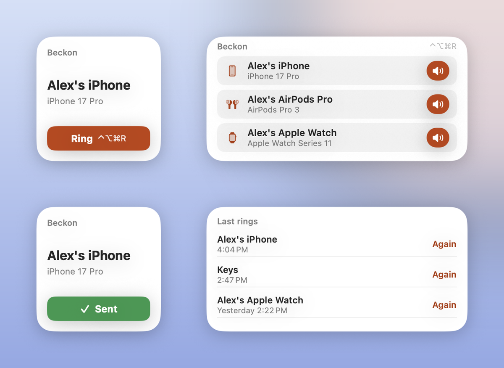
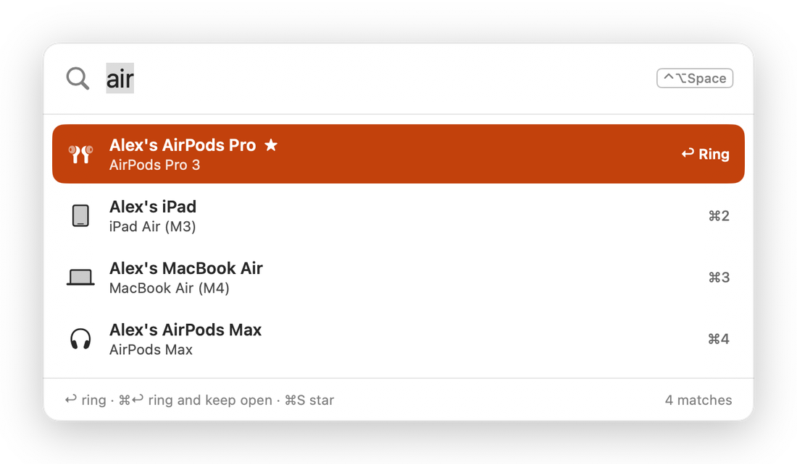
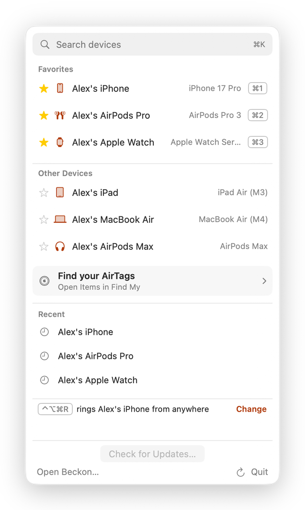
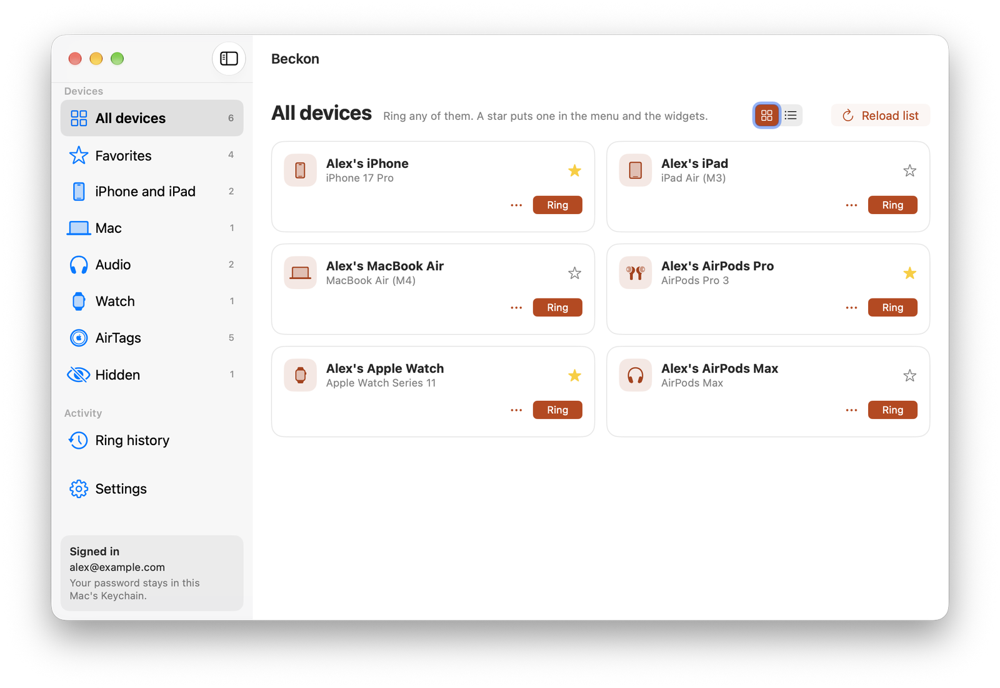
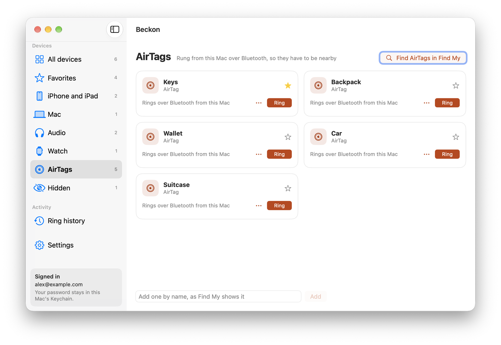

The demo and screenshots use made-up devices. Nothing in them really rang.
Set it up in a minute
Download it
Click Download for Mac, open Beckon.dmg and drag Beckon onto Applications in the window. Open Beckon from Applications to finish; it offers to remove the downloaded DMG and ejects the installer. Future updates are offered inside Beckon.
Sign in once
Click the Beckon icon in the menu bar and sign in with your Apple Account email and password. Apple checks the password before Beckon saves it, in your Mac's Keychain.
Star your favorites
Star the devices you lose most. They go to the top of the menu, onto the widget, and onto ⌘1–⌘9. Add the Ring widget from the desktop's Edit Widgets.
Every way to ring
Desktop widgets
One click on Ring sends it straight from the widget, even with the app closed. The button says Sending… right away, then Sent once Apple has it. Last rings rings anything again.

A palette on a key
Press ⌃⌥Space anywhere, type a few letters and press Return. ⌃⌥⌘R rings your favorite without even that. Both keys can be changed.

The menu bar
Search with ⌘K, your favorites with their keys, and your last rings with Again. Beckon lives here, with no Dock icon unless its window is open.

The window
All your devices by type, AirTags, devices you've hidden (old Macs, say), your ring history and settings. Siri and Shortcuts get Ring a Device too: "Ring my device with Beckon."

AirTags, too
Apple's web Find My can't ring AirTags, so Beckon drives the Mac's Find My app for you. It works when the AirTag is in Bluetooth range of your Mac, and needs Accessibility and Screen Recording permission. Find My shows for a moment while it rings.

What Beckon keeps, and what it doesn't
- Your password stays in your Mac's Keychain. Beckon signs in to Apple only when you ring, or when you load your device list.
- It keeps your devices' names and models, your favorites and your last 200 rings, on your Mac. No battery, location or status is collected or kept.
- There's no Beckon server, account or analytics. Your Mac talks only to Apple.
- Apple emails you each time a device rings, just as it does from iCloud.com.
Questions
Is this from Apple?
No. Beckon is an independent app. Apple has no public way to make a device play a sound, so Beckon signs in to Find My's web service with your password, the same way iCloud.com's Find Devices does. Apple could change that service at any time, and automating iCloud may go against its terms, so use it for your own devices and at your own risk.
Why does it need my Apple Account password?
That's how Find My on the web lets a device ring without a two-factor code. Beckon checks the password with Apple before saving it, and if Apple ever rejects it (say you changed it), Beckon forgets it rather than trying again.
Why does a ring take a couple of seconds?
Each ring signs in to Apple and then sends the sound, which takes about two to three seconds. The widget shows Sending… meanwhile.
Is there an iPhone version?
Not yet. Beckon is Mac only for now.
Can I see the code?
Yes, it's all on GitHub, including how the sign-in works.